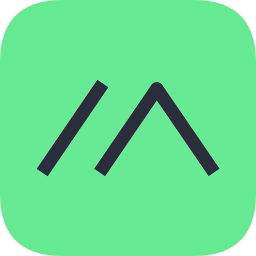

Crystal Coast of North Carolina Mesh Network

(and why do I care?)
Both Meshtastic and MeshCore enable off-grid communication using LoRa radios. They share the same purpose but take fundamentally different approaches to routing. Crystal Coast Mesh supports both — here's how to choose.

The established choice. Simple, plug-and-play mesh networking where every device can relay messages. Great for beginners, small groups, and ad-hoc situations.
Best for: Beginners, hiking groups, casual use, small networks
The newer, more efficient option. Uses dedicated repeaters for smarter routing and better scalability. Ideal for larger networks and planned deployments.
Best for: Large networks, planned deployments, tech enthusiasts
| Feature | Meshtastic | MeshCore |
|---|---|---|
| Routing Method | Flood (all nodes relay) | Structured (dedicated repeaters) |
| Max Hops | 7 | 64 |
| Setup Complexity | Very Easy | Moderate |
| Mobile App | Free, open-source | Free (optional $7.99 upgrade) |
| Community Size | Large | Growing |
| Network Scalability | Good (small-medium) | Excellent (large) |
| Delivery Confirmation | Basic | Detailed |
Meshtastic and MeshCore are not compatible with each other. A Meshtastic node cannot talk to a MeshCore node directly - they use different protocols and encryption. All participants in a mesh network must use the same system. Crystal Coast Mesh supports both protocols, but you'll need to choose one for your group or deployment.
The same hardware works for both! You can flash devices with either firmware and switch between them. Many enthusiasts keep some nodes on Meshtastic and some on MeshCore for different projects.